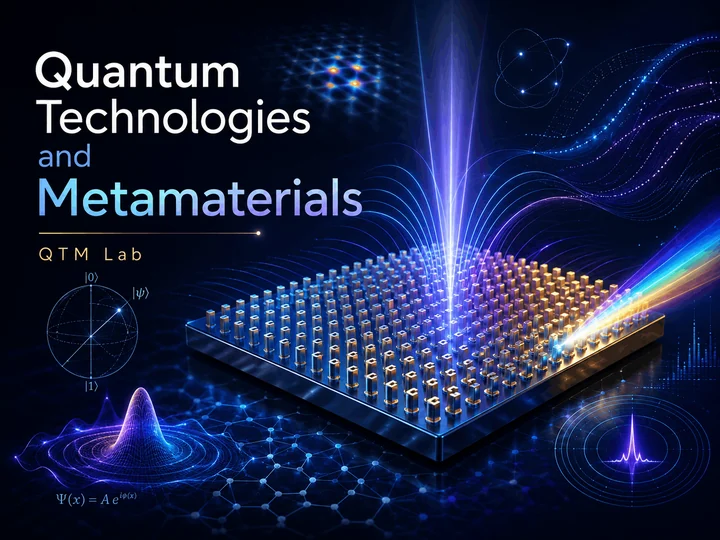
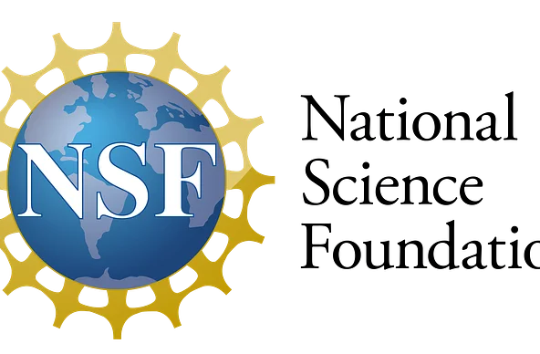
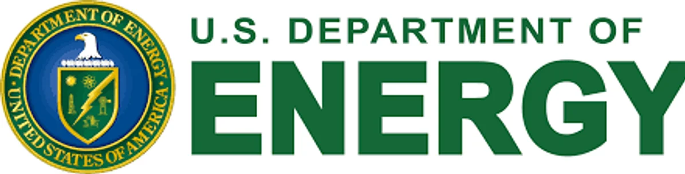
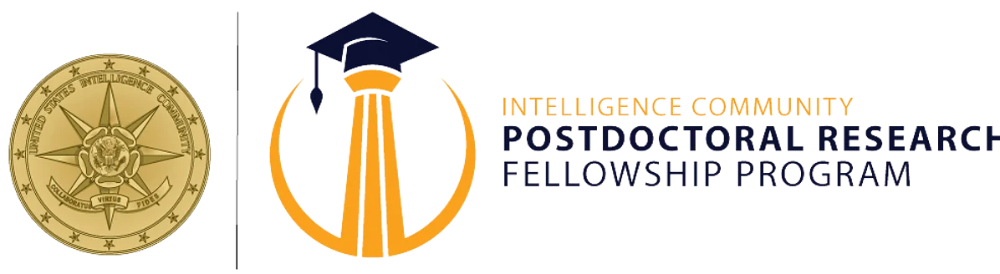

Florida International University
QTM Lab
Quantum Technologies and Metamaterials Lab
QTM Lab engineers waveform- and metamaterial-enabled electromagnetic systems for quantum hardware, precision sensing, and photonic control. We combine complex-frequency electrodynamics, cryogenic quantum interfaces, metasurfaces, and reproducible computation to move ideas from wave physics to deployable devices.

200+
peer-reviewed publications
60
h-index
14,666
citations as of June 17, 2026
111
i10-index
$1.4M+
awarded external, fellowship, and in-kind support
FIU
quantum-computing curriculum launched

Led by Prof. Aleksandr Krasnok
Prof. Krasnok is an FIU assistant professor, QTM Lab director, Co-Director of the FIU Quantum Initiative, IEEE Senior Member, and author of 200+ peer-reviewed publications across Science, Nature, Physical Review Letters, nanophotonics, metamaterials, and quantum hardware.
Funding and Support
Selected active, awarded, and recent support includes DOE MSRC/MEERCAT El-Pho, ONR nanoscale coatings research, NSF I-Corps Meta-MRI, AFOSR complex-frequency plasma research, Intelligence Community postdoctoral fellowship support, IonQ quantum compute credits, and NVIDIA GPU compute resources.



Research Snapshot
QTM Lab connects photonics, electromagnetics, quantum technologies, cryogenic systems, metasurfaces, and applied engineering.
Complex-frequency electrodynamics and non-Hermitian scattering
Pole-zero engineering, waveform design, and resonant scattering beyond steady-state bounds.
Relevant publicationsQuantum control and quantum-hardware diagnostics
Control protocols, diagnostics, and modeling workflows for quantum devices and platforms.
Relevant publicationsCircuit/cavity QED and photonic interfaces
Superconducting, microwave, and photonic interfaces for quantum information systems.
Relevant publicationsNanophotonics, metasurfaces, and reconfigurable antennas
Mie resonators, metasurfaces, polaritonic media, antennas, and active electromagnetic structures.
Relevant publicationsQuantum sensing, cryogenic sensing, and applied metrology
Cryogenic wireless sensing, NV-diamond magnetometry, and field-control metasurfaces for measurement.
Relevant publicationsComputational electromagnetics and quantum simulation
Full-wave simulation, GPU/HPC workflows, QuTiP, Qiskit, and reproducible research pipelines.
Relevant publicationsAbout QTM Lab
The Quantum Technologies and Metamaterials Lab at FIU develops theoretical, computational, and experimental tools to control light–matter interaction, resonant wave systems, quantum hardware interfaces, and metamaterial-enabled sensing. The lab connects photonics, electromagnetics, quantum technologies, cryogenic systems, metasurfaces, and applied engineering.
Featured Publications
Selected papers highlighting complex-frequency wave physics, scattering, quantum systems, and nanophotonics.
- A. Krasnok, “Constant-Amplitude 2π Phase Modulation from Topological Pole-Zero Winding,” Physical Review Letters, accepted June 1, 2026.
- S. Kim, A. Krasnok, and A. Alù, “Complex-frequency excitations in photonics and wave physics,” Science 387, eado4128 (2025).
- S. Kim, S. Lepeshov, A. Krasnok, and A. Alù, “Beyond bounds on light scattering with complex frequency excitations,” Physical Review Letters 129, 203601 (2022).
- A. Krasnok et al., “Anomalies in light scattering,” Advances in Optics and Photonics 11, 892–951 (2019).
- A. Krasnok et al., “Coherently enhanced wireless power transfer,” Physical Review Letters 120, 143901 (2018).
- A. Krasnok et al., “Superconducting microwave cavities and qubits for quantum information systems,” Applied Physics Reviews 11, 011301 (2024).
- Q. Zhang et al., “Interface nano-optics with van der Waals polaritons,” Nature 597, 187–195 (2021).
- G. Hu et al., “Topological polaritons and photonic magic angles in twisted α-MoO3 bilayers,” Nature 582, 209–213 (2020).
Selected Cover Art
Selected published work recognized with journal cover features.


Recent News
Awards, support, publications, events, and lab milestones.
FIU Quantum Initiative
QTM Lab contributes to FIU-wide quantum education, research, workforce development, and partnerships.
Honors Snapshot
- FIU Presidential Excellence Award, 2026
- FIU Top Scholar Award, 2025
- Leopold B. Felsen Award for Excellence in Electrodynamics, 2024
- IEEE Senior Member
- Stanford/Elsevier Top 2% Scientist recognition, 2021–2025
- Early-Career Award in Nanophotonics, 2021